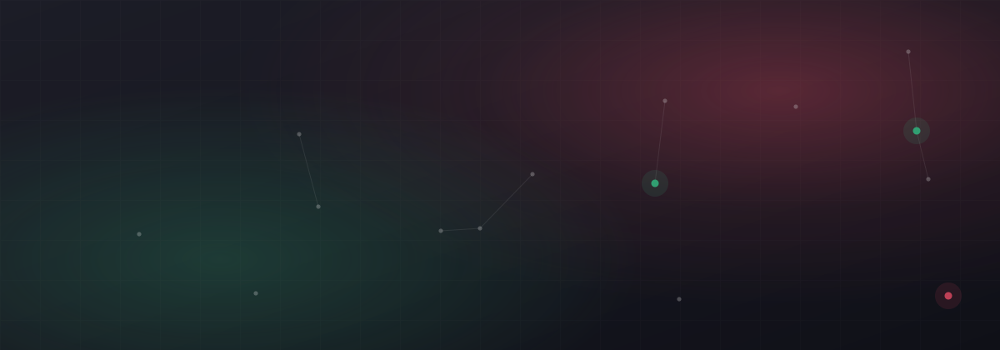

Todas las empresas que visitamos tienen copias de seguridad. Casi ninguna sabe si funcionan. Y hay una diferencia enorme entre tener copias y poder recuperar, que es lo único que importa el día que hace falta.
1. Nadie ha probado nunca a restaurar
Es el fallo más extendido con diferencia. La copia se ejecuta cada noche, el informe dice «correcto» y todo el mundo se queda tranquilo. Pero una copia que nunca se ha restaurado no es una copia: es una suposición.
Nos hemos encontrado copias correctas de una carpeta que ya no se usaba, copias de una base de datos sin los archivos de registro necesarios para levantarla y copias cifradas cuya contraseña no conocía nadie en la empresa. Todas ellas daban «correcto» todas las noches durante años.
Qué hacer
Una prueba de restauración real cada trimestre, con acta: qué se restauró, cuánto tardó y si los datos eran utilizables. Es media mañana de trabajo al trimestre.

2. La copia está en el mismo sitio que los datos
Un disco USB conectado permanentemente al servidor, en la misma sala. Protege frente a un borrado accidental, y ante nada más. No protege de un incendio, de una inundación, de un robo ni, sobre todo, de un secuestro de datos: el programa malicioso cifra también lo que esté conectado y accesible.
Qué hacer
La regla clásica sigue siendo válida: tres copias de los datos, en dos soportes distintos, con una de ellas fuera del edificio. Y al menos una copia que no se pueda modificar ni borrar desde la red, que es lo que de verdad frena un cifrado masivo.
3. Se copian los datos, pero no el sistema
Tienes los archivos, perfecto. Ahora necesitas un servidor con el sistema operativo instalado, el programa de gestión configurado, las licencias, los permisos de las carpetas y las impresoras. Eso son días de trabajo que nadie contó.
Qué hacer
Copia de imagen completa del servidor, no solo de carpetas. Y documentación de la configuración guardada fuera del propio servidor, que si no aparece el problema del huevo y la gallina.
4. Nadie mira los informes
El sistema envía un correo cada mañana. Al principio se lee. A los tres meses se filtra a una carpeta. Al año, cuando la copia lleva seis semanas fallando, nadie se ha enterado.
Qué hacer
Invierte la lógica: que el aviso salte cuando algo no se ha hecho, no cada vez que sí. Y que haya una persona con nombre y apellidos responsable de revisarlo, con una revisión semanal formal.
5. El plazo de retención es demasiado corto
Copias de los últimos siete días. Suena razonable hasta que alguien descubre que un archivo se corrompió hace tres semanas, o hasta que un cifrado de datos permanece latente un mes antes de activarse. Para entonces todas las copias contienen ya el problema.
Qué hacer
Retención escalonada: diarias de la última semana, semanales del último mes, mensuales del último año. Ocupa bastante menos de lo que la gente teme y cubre casi todos los escenarios reales.
6. No hay copia de lo que está en la nube
Es la falsa sensación de seguridad más extendida ahora mismo. Que el correo y los archivos estén en una suite en la nube no significa que haya copia de seguridad. El proveedor garantiza que su servicio funcione, no que puedas recuperar lo que un empleado borró hace dos meses, ni lo que se llevó al irse.
Qué hacer
Una solución de copia específica para el correo y los archivos en la nube, con su propia retención. Es barata y el día que hace falta no tiene precio.
La prueba de los cinco minutos
Si quieres saber ahora mismo cómo estás, responde a estas cinco preguntas. Si fallas más de una, tienes trabajo pendiente:
- ¿Cuándo fue la última vez que alguien restauró algo de verdad?
- ¿Dónde está físicamente la copia más reciente que no está conectada a la red?
- ¿Cuánto tiempo tardaríais en volver a facturar tras perder el servidor?
- ¿Quién revisa que las copias se hacen, y cada cuánto?
- ¿Hay copia del correo y de los archivos que tienes en la nube?